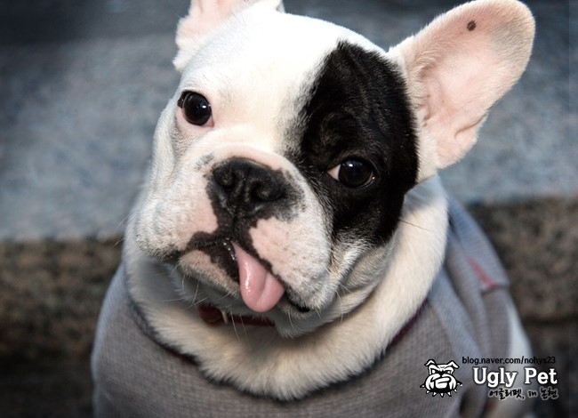
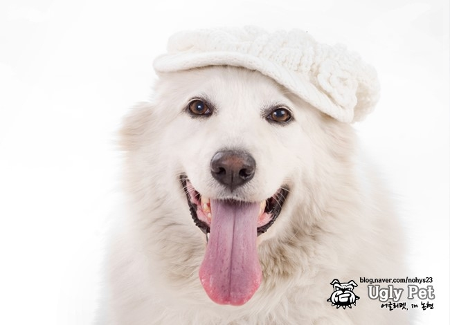
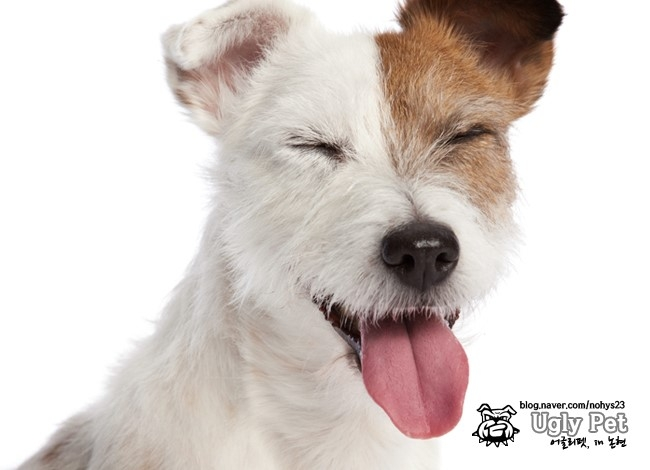
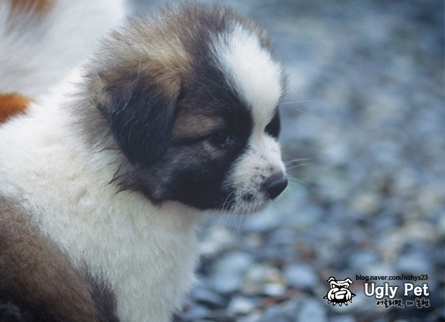
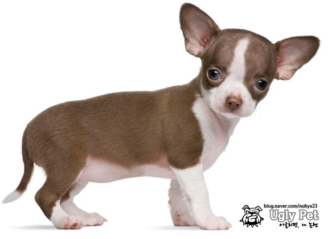

안녕하세요^^ 강아지 분양받을때 주의할점입니다!
강아지 분양받을때 어떤점을 주의하면서 분양받아야하는지
오늘은 가장 궁금해 하셨던 강아지 분양 주의사항에대해서
짧게 이야기를 해보도록 할게요^^

강아지 분양 주의사항
강아지 분양 주의사항1. 대변상태
엉덩이쪽을 확인해서 엉덩이 쪽에 대변이 지저분하게 설사 형태로
냄새가 고약하다면 설사를 하고있는 아이일수고있습니다
물론 설사를 한다고 건강이 나쁘다는것은 아니지만.
사료양을 넉넉하게 주는 상황일 경우 연변을 보게되는 경우도 있는데
점액질의 대변이나. 혈액성 대변 짙은 검정색에 가까운 대변의 경우
질병적인 요인이 있을수있으니 참고해주세요^^

강아지 분양 주의사항2. 콧물
단순하게 코가 촉촉한게 아니라 줄줄 흐르는 끈적이는 콧물이 있는지
노란콧물이 나오는지. 기침을 연발하는 아이라면 호흡기에 질환을
가진 상태일수도있으니 강아지 분양시 주의해주세요
강아지 분양 주의사항 2, 콧물

강아지 분양 주의사항3.
귀속을 들여다봤을때 검정 귀지가 귀 외부에 잔뜩 있따면
귀진드기에 감염이 된 아이일수도 있습니다.
단순한 외이염정도일수도 있지만 잔뜩 있따면
위생관리가 안된 아이일 확률이 높답니다..ㅠㅠ

강아지 분양 주의사항4.모질
피부에 탈모성 부위가 넓게 보인다거나 피부에 딱지가 있을경우
세균성이나 곰팡이성 피부염일 확률이 높아요
귀끝이나 겨드랑이 쪽이 붉게 부어올라있을경우
기생충에 감염될 가능성이있으니
특별히 주의해주세요!!!
강아지 분양 주의사항 4, 모질

이곳은 노현동에 위치한 어글리펫은 1견1실로 운영되는 프리미엄 강아지분양방이있답니다.
강아지분양방 외에도 애견 관리실이나 격리실 탕비실 애견욕식 등의 관리시설과 함께
애견 전용 호텔장까지 프리미엄으로 꾸며진 공간을 어글리펫에서 만나볼수있다고하네요!
예쁜 외모를 겸비한 강아지분양방에 있는 아가들은 국내 최고의 혈통까지
겸비한 아이들이라 소위 강아지계의 엄친아 엄친딸들이라 불리는 강아지들이랍니다^^
전문 애견 관리사가 24시간 상주하며 자견 건강을 체크하기 때문에
어글리펫에서 분양 받은 견주분들께 최상의 가족들을 분양해드리고 있어요♥
해외 희귀견, 특수견을 분양하고 있는 어글리펫과 함께 배운
강아지 분양 주의사항, 어떠셨나요? 참고되셨으면 좋겠어요!
반려동물과 함께 행복한 삶을 살기 위한 첫걸음으로
강아지 분양 주의사항을 잘 알아두고
건강한 강아지를 분양 받으실수 있길 바래요!
[출처] 강아지 분양 주의사항, 필수항목!|작성자 어글리맘
http://blog.naver.com/nohys23/10180745374
|